← Laufstrecken
Kübliser Runde
Wegname:
KübliserRunde
Streckenart:
Laufstrecke
Kategorie:
Berglauf
Region:
GR Mitte
Streckenlänge:
20 Km
Hm +:
800 hm
Hm -:
1300 hm
Datum:
27.07.25
Kurzbeschrieb:
Runde Küblis
Link SchweizMobil:
Bild SchweizMobil:
Bericht:
«Jetzt werden wir von unten mehr nass als von oben» war Michelines Fazit, als wir den Moorboden zum zweiten Mal überquert hatten. Doch von Anfang an. Unsere Wunschtour seit 2023, Küblis – Durannapass – Langwies, sollten wir auch an diesem Tag nicht verwirklichen können. Die Unwetterwarnungen prognostizierten Starkregen im Prättigau. Der Überquerung der Moorlandschaften sahen wir am Samstagmittag, als sich die Prognose bewahrheitet hatte, kritisch entgegen. Nach Rücksprache mit den angemeldeten Teilnehmenden entschieden wir, eine Rundtour Küblis – Küblis durchzuführen, mit dem positiven Nebeneffekt, trockene Kleider und Schuhe in Küblis deponieren zu können. Als Fahrgemeinschaft erreichten Micheline, Lars, Lädi und Iris kurz nach halb 10 Uhr den Startpunkt in Küblis. Frohen Mutes nahmen wir die Strecke in Angriff, die rasch stetig bergauf führte. Lars schien den Wettkampf des Vortages in Davos kaum in seinen Beinen zu spüren und lief locker voran mit – Hut ab! Die mystischen Nebelschwaden und die Lücken in den Wolken mit Sicht aufs Tal waren schöne Sujets fürs Auge und die Kamera. Wir machten viele kleine Aussichtsspots – auch, damit die Gruppe immer aufschliessen konnte. Die Steigung war sehr angenehm, so, dass wir auch im Aufstieg geselliges Plaudern geniessen konnten. Nach Pardels wurde der Weg nasser und wir benötigten mehr Konzentration und mussten ein paar Umwege suchen, um möglichst trockenen Fussen nach oben zu gelangen. Kurz vor dem höchsten Punkt setzte leichter Regen ein. Im Schutz einer Tanne verpflegten wir uns kurz und zogen die Regenjacken über. Es wurde langsam frisch, vor allem die feuchten Füsse. Angekommen auf dem Moosboden auf 1710 m. ü. M. mussten wir auf dem Weg zur Conterser Schwendi einen kleinen Teil des Moores durchqueren, was feucht und glatt verlief. Nach ca. 1 km dann der Schreckmoment des Tages: Die Brücke über den Schwarzbach war kaputt, unpassierbar. Lars und Lädi suchten noch vergeblich nach Möglichkeiten, den Bach zu überqueren, aber Wasserstand nach den heftigen Regenfällen war zu hoch. Also kehrten wir um. Noch einmal übers Moor (jetzt wussten wir besser, wo wie NICHT hintreten sollten) und zurück nach Pardels. Von dort nahmen wir einen alternativen Weg ins Tal, nämlich über Cafrida und Conters und dann weiter nach Küblis. Die Abstiege waren gut machbar, aber wegen des nassen Untergrunds benötigen wir unsere Zeit – dafür hatte sich inzwischen die Sonne ein wenig durchgekämpft. In Küblis angekommen waren wir alle heilfroh um unsere trockenen Socken und Schuhe. Kaum im Auto losgefahren für den Z’Vieri in der Schierser Bäckerei, fielen dann auch die angekündigten Regentropfen. Super Timing. Danke für die abenteuerliche Runde und die nette Gesellschaft!
Autor:
Iris und Lädi
Teilnehmer:
Micheline, Lars, Lädi, Iris
Galerie:
-
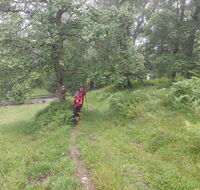
-
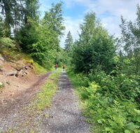
-
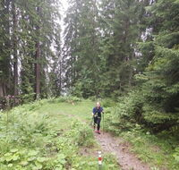
-
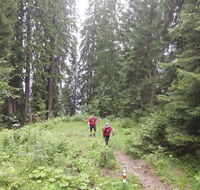
-
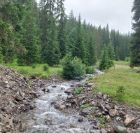
-
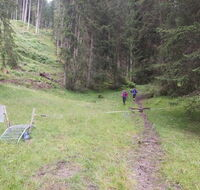
-
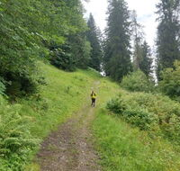
-
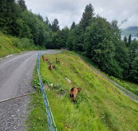
-
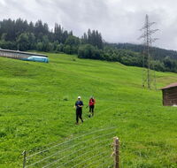
-
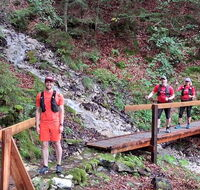
-
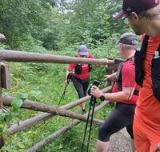
-
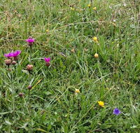
-
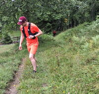
-
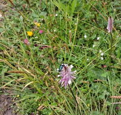
-
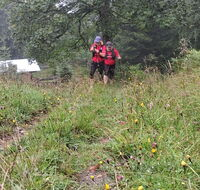
-
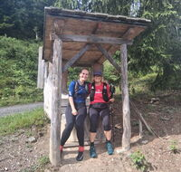
-
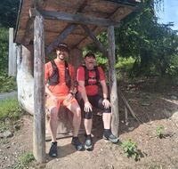
-
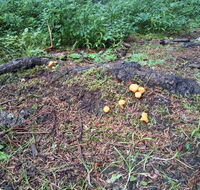
-
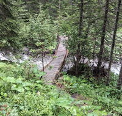
-
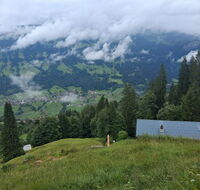
-
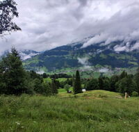
-
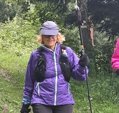
-
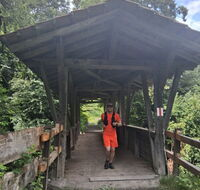
-
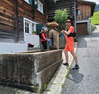